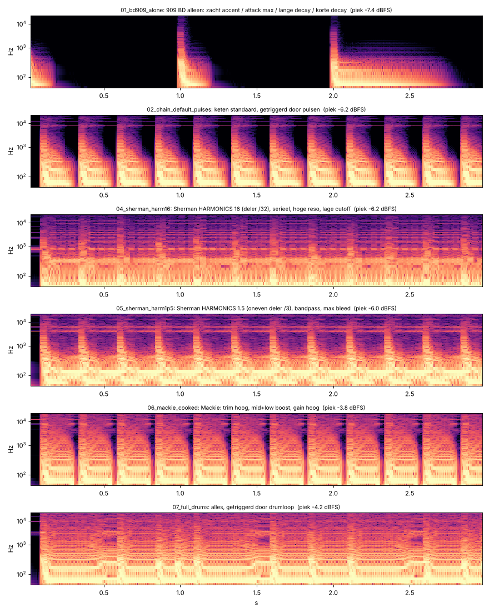
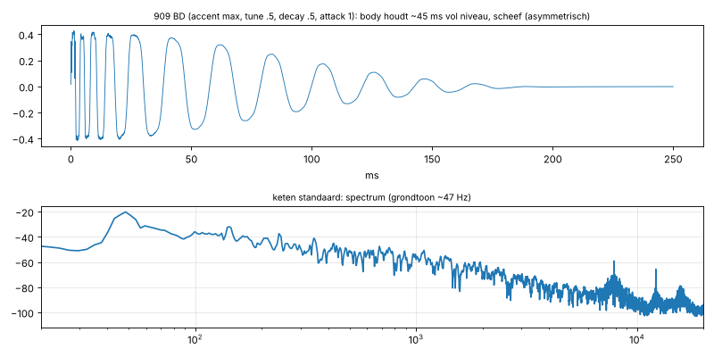
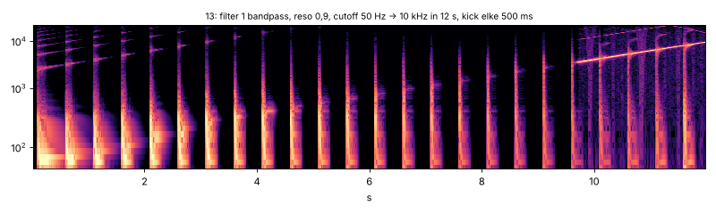

nanohardcore
Eigen effectketen voor de Livtra NanoCore (RISC-V, float32, 44,1 kHz): een audio-getriggerde TR-909-bassdrum, een Sherman Filterbank-achtig dubbel switched-capacitor-filter en een Mackie 1202-VLZ PRO-channelstrip. Waar een schema bestaat, is het op componentniveau gemodelleerd en tegen metingen gecontroleerd.
Demo's
Offline gerenderd met exact de code die ook voor de NanoCore compileert.
909 BD alleen
Zacht accent · attack max · lange decay · korte decay
Keten, standaard
Getriggerd door pulsen op de ingang
Getriggerd door een drumloop
Transient-detector op de pedal-ingang
Alles aan
Harmonics, resonantie, Mackie heet
Sherman INPUT-sweep
−20 → +40 dB: buis → OVER → rectify
…met LIMIT
Meer ruimte voor resonantie bij overdrive
Resonantie-sweep
Reso 0,9, 50 Hz → 10 kHz: oscilleert pas hoog
L-B-H-sweep
LP → BP → HP → BP → LP via MIDI
ADSR bipolair
Filter 1 omhoog, filter 2 omlaag, gate = drumloop
HARMONICS 16
Klok van filter 2 gedeeld door 32
HARMONICS 1.5
Oneven deler /3, bandpass, max bleed
Mackie TRIM-sweep
0 → +45 dB met auto level: alleen meer drive

De modellen
TR-909 bassdrum — componentniveau, gekalibreerd op echte units
Uit de service notes (voicing board): pitch-envelope C9/R21/D7 met TUNE-pot VR2, CV-som IC12, driehoek-VCO IC13a/b (C14, R59, Schmitt R49/R50), diode-shaper R52 + D10/D11 (Shockley, opgelost als tabel), VCA Q12 met verzadiging, ENV1 C8/VR5, attack-tak Q8/Q9 (Sallen-Key) met ruis. De onderdelen voorspellen ~54 Hz; echte units zakken lager, dus is het model gefit op metingen: ~47 Hz rust, ~230 Hz op 5 ms, ~160 Hz op 10 ms, en een body die 50–80 ms vol blijft staan.

Sherman Filterbank — klokgestuurd switched-capacitor-filter
- Twee LTC1060-achtige sampled-data SVF's met vaste coëfficiënt: f0 = fclk/50 (of /100). Afstemmen gebeurt alleen via de klok.
- De ingang wordt op de klokflanken gesampled, de uitgang wordt vastgehouden: echte aliasing en spiegelbeelden, plus clock bleed. Die bleed is alleen hoorbaar in het onderste stuk van de lowpass.
- HARMONICS: beide klokken komen uit één snelle masterklok met delers (1 · 1.5 · 2 … 16); oneven delers geven een duty die niet 50% is.
- Resonantie: een logaritmische Q-pot, filter 2 sterker dan filter 1, en zelfoscillatie alleen in het midden/hoog door Q-verhoging bij hoge kloksnelheden.
- INPUT: een buisachtige trap (clean → warm → total), vanaf 60% een harde OVER-trap, vanaf 80% een gelijkrichter (octaaf omhoog). HI cut/boost en LIMIT.
- ADSR: een condensator-envelope met de input als gate, en per filter een bipolaire diepte met een echte nul.
Van de Filterbank is geen schema openbaar. De structuur volgt de handleiding en reviews; de niveaus zijn gemarkeerd als CAL.

Mackie 1202-VLZ PRO — uit het schema (main board 990-217-00 rev B)
Instrumentatie-preamp (Q5/Q1 2SA1084 + U7A/U7B NJM2068, 5k11-feedback, U11A ×0,511) met railclipping per poot, LO CUT U13A en EQ U27B als echte circuitsimulatie (nodale analyse → exacte toestandsruimte over de condensatoren), GAIN-trap U40A (R565/R605/R570/R555), pan en mute, alles 2× oversampled. De EQ-respons komt tot 12 kHz op ±0,4 dB overeen met een onafhankelijke analyse.
MIDI
Kanaal maakt niet uit. CC 120–127 (kanaalmodus) worden genegeerd. Bipolaire knoppen: 64 = exact nul. Note-on = trigger + gate.
| CC | 909 |
|---|---|
| 20 · 21 · 22 · 23 | TUNE · DECAY · ATTACK · LEVEL |
| 14 · 15 | ACCENT · accentbron (0–63 hit-sterkte, 64+ vast) |
| 16 · 17 | pitch-trim ±12 st · sweep-diepte (mods) |
| CC | Sherman |
|---|---|
| 24 · 80 · 81 | INPUT · HI cut/flat/boost · LIMIT |
| 25 / 29 | FREQ 1 / 2 |
| 26 / 30 | RESO 1 / 2 |
| 27 / 31 · 28 / 85 | L-B-H 1 / 2 · CORRECTIE 1 / 2 |
| 86 · 87 · 106 | HARMONICS · PAR↔SER · klokratio 50/100 |
| 88 / 89 | ADSR → filter 1 / 2 (bipolair) |
| 102–105 · 5 · 82 | A D S R · snelheid (0 = 4×) · minimale gate |
| 90 | clock bleed |
| CC | Mackie / keten |
|---|---|
| 107 · 108 | TRIM (−15…+45 dB) · LOW CUT |
| 109 · 110 · 111 | EQ LOW · MID · HI |
| 112 · 18 · 19 · 113 | GAIN · PAN · MUTE · MAIN MIX |
| 114 · 115 · 116 | triggergevoeligheid · hold-off · thru |
| 117 · 118 · 119 | output · lijnniveau Sherman→Mackie · auto level |
Status
- Compileert voor RV32IMAFDC/ilp32d (de ISA van de NanoCore). De uitvoer onder emulatie komt overeen met de host-build.
- CPU: ~138 MIPS standaard, ~291 MIPS in het zwaarste geval; 21 KB code, 5,6 KB state.
- Nog niet op de pedal. Het bewezen patch-slot is 1 392 bytes; deze keten heeft een grotere code-plek nodig (FIT-segment uitbreiden) en een eigen state-allocatie. Zie re-nanocore.
Bouwen
make render (demo's naar out/) · make test (metingen) · make rv (RISC-V-build + instructietelling; clang, ld.lld, pip install unicorn pyelftools).